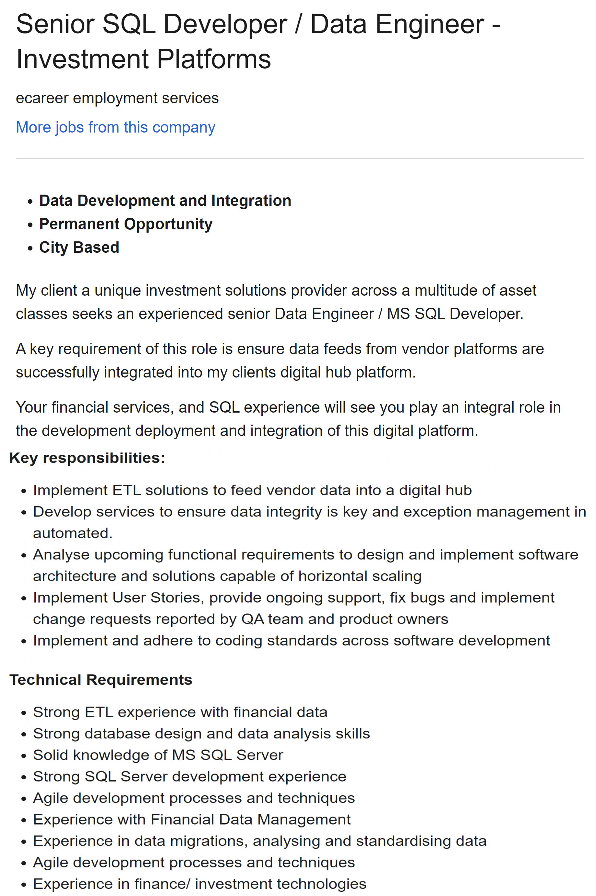
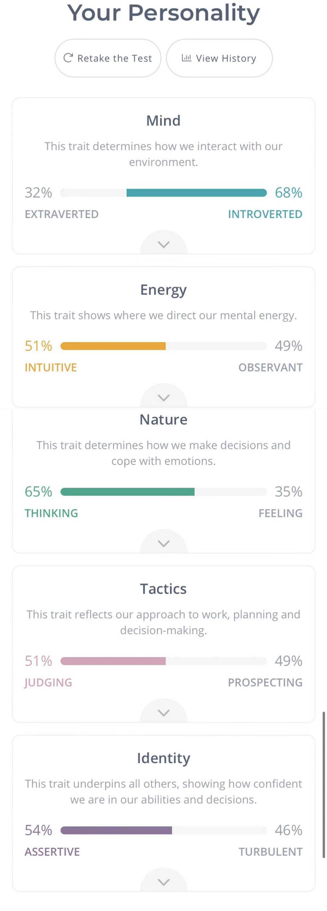
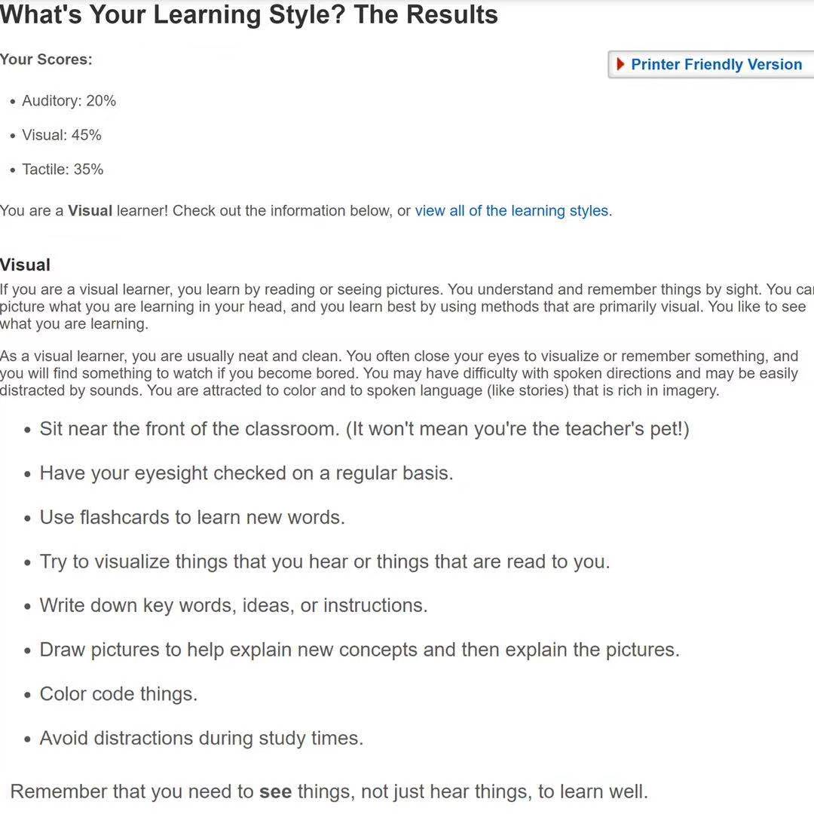
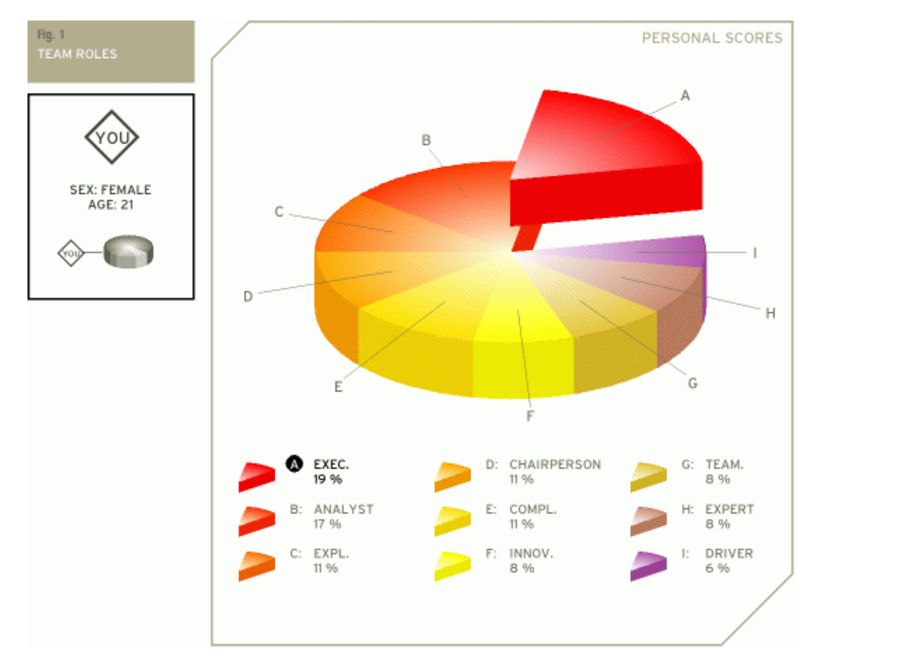

Personal Information
I am from China and I have no religious beliefs, I gave myself an English name: Sue. I came to Australia six years ago and then became a permanent resident of Australia. I have been studying in Melbourne since high school. This is my sixth semester at RMIT, I am current a student that is doing Bachelor of Economic and Financial in RMIT University.
When I am at leisure, I like to read books and play badminton, which is a way to improve myself. During the holidays, travel is my first choice. It can relax the mind and broaden the horizons.
Interest in IT
The world is now in the period of the fourth industrial revolution (virtual reality, artificial intelligence, robotics). The IT industry is one of the most important industries in this era, and it is also an industry that will not be eliminated or replaced. IT skills are now needed by job seekers in more industries, and job seekers who have mastered IT skills will have greater competitiveness. It has now become an inseparable part of people's lives. Shortly, there is a high probability that IT skills will become a necessary skill for people like driving.
The financial industry was my first choice at first, but I found that finance and IT are highly compatible, and IT skills are used in many areas of finance. Two years ago, my father recommended to me several books. They talked about the development of the Internet and the advancement of artificial intelligence. After reading these books, I understand that the vigorous development of the IT field is the general trend of the development of human civilization and technological progress. I believe that the next Technological Singularity will be brought by the IT industry.
The reason I chose RMIT is that RMIT has excellent teachers and first-class teaching equipment and teaching resources. I hope to acquire proficient IT and financial knowledge at RMIT. As far as I know, the master of artificial intelligence in RMIT is ranked in the top ten of the world, and I will study that degree in the future.
Ideal Job
Senior SQL Developer / Data Engineer - Investment Platforms
Description
The financial engineer is the job I am looking for the most, however, this career is a new career, I didn't find its job advertisement in Australia. This job is very corresponding to my major, involving the fields of IT and finance. I have found another job (Data Engineer - Investment Platforms) which is very similar to a financial engineer. The requirement of the role is to ensure that it is successfully integrated the data feed from the supplier platform into my clients' digital hub platform. What attracts me most about the job is that the average salary is high, and I can use what I have learned and what I will learn.
Skills I Have
Now I have basic financial knowledge, including risk and portfolio management, international economic monetary, financial market, business finance. I also master some mathematical foundations of statistics and calculus.
Skills I need
IT skills are needed, such as programming languages, programming tools, database design and data analysis skills, knowledge of MS SQL Server, SQL Server development experience, agile development processes and techniques. As well as advanced knowledge of mathematics and finance. Knowledge of marketing also needs to be strengthened to meet the needs of customers and the market.
Learning Plan
After obtaining a bachelor's degree, continue to study for a master's degree in finance, a master's degree in financial engineering and a master’s degree in artificial intelligence. During the study period, I am proficient in Python, C language, and various programming tools. I will also get the Chartered Financial Analyst certificate and Financial Risk Manager certificate.
Getting higher and more degrees helps me find a better job and get a higher salary.

Ideal Job
Strengths
- Independence: good at breaking rules, getting rid of obstacles and shackles.
- Rational: I am proud of my thoughts, can continue to expand my knowledge, and continue to design innovative solutions.
- Determined: I have a distinct personality and ambition, and I have a clear plan for success.
- Curious: Being suspicious of things and willing to accept new ideas.
Weaknesses
- Arrogance: not easy to accept other people's suggestions.
- Dismissive emotion: very sensible, I will value facts more than valuable people.
- Overly critical: high standards and harsher to others.
- Combative: it is easier to argue about useless regulations with people.
I am a visual learner and I need to learn by reading, not just by listening, and imagining what I have learned in my mind. It is also necessary to try to visualize what I see or hear.
Things can do to help me to learn better:
- Use flashcards to remember and learn new things.
- Write down key ideas, words.
- Avoid distractions and focus when studying.
In task 3, the extroversion index is relatively low, and the imagination index is relatively high. This shows that I am good at creating but unwilling to communicate with others. The emotional stability index is also low, and I need to strengthen my control over my emotions and not bring negative emotions into my work.
Team Composition
I am imaginative and creative, and I can burst out inspiration and methods to solve the problem. But I lack the spirit of cooperation, I would communicate less with the teammates, and have an impatient attitude towards the inefficient team members.
When forming a team, I should try my best to share my thoughts and insights with the team members and listen to the opinions of every teammate. More tolerance and understanding will make the learning atmosphere of the whole team better. I should also pay more attention to the progress of my teammates’ work, to make sure everything is on the right track.



Project Idea
Overview
In this era, smartphones have become an indispensable tool in people's lives, and they are very practical in many ways. Such as communications, games, office, entertainment, etc. And this is all due to various apps. With the upgrading and updating of smartphones from generation to generation, various apps are constantly improving and perfecting their functions. Moreover, there are more and more types of apps. They make people's lives more convenient because many things can be done as long as they are operated on a mobile phone. However, there are still some shortcomings in some apps.
This project will be working on a memo app on a smartphone. It aims to improve and upgrade the existing memo app in the market. Expand more functions to enhance customer experience.
Motivation
However, many memo apps are not fully functional and can only perform the most basic operations (take notes, save pictures, do the most basic marks and doodles). But students and most of the employed people need more functions, and at this time, the practicality of the memo app is relatively poor. People have to use more apps to perform other operations to obtain a more complete and detailed information record. At present, Australia has 12,8779,000 employed people and 4,006,974 students registered in the school. The market demand in this part is huge, and people need a multi-functional memo app to record all aspects.
Description
There can be more than text and images in the memo because the form of recording is not only text and pictures, but also other ways to record the event. On the computer, people can create a folder that contains text, images, video, and audio. Several different apps are needed to complete this operation on a mobile phone, and the content is also stored in different places. After more files been added, or for a long time, people will find it difficult to match the text and image records with video and audio recordings of an event. And nowadays, information changes extremely fast, which brings great inconvenience to people's lives.
Usually, ordinary memo apps can only perform some simple operations and are usually used for simple recording, and the functions of marking and graffiti are also very simple. When people want to share the records in a memo with others, they only send the contents of the file instead of the entire file.
This project is a memo app designed to improve the user experience and the expand the number of users. It is expected that it can meet the requirements of users in all aspects of recording as much as possible. This memo app will not record text and images, but can also record videos, tables, and audios, and add more functions about marks, graffiti, mosaics, trimming, and else to modify the content in the memo.
There will be functional options in this memo app to choose whether people need to record text, pictures, videos, tables, or audio recordings. If users use two or more functions for the same thing, they can integrate records of different types into a separate file. In this way, when people want to find the record of this event, it will be very convenient, all the records of the event can be found by just opening one app.
Many memo apps have few modifications and marking functions, their functions are not perfect, and the scope of operation is very limited. This has caused a lot of trouble for those who need to take notes and make changes. As a result, people have to download another app and use it to make notes and make changes.
The memo app of this project will greatly improve this problem, adding many operable functions on the original basis. It makes the original functions such as taking notes, marking, graffiti, and mosaic more perfect, are more complete, and add more other operational functions
This allows people to still have a good user experience without using a computer or tablet.
Teamwork is indispensable in study and work. The original Memo app can only share or send the content instead of this file. The new products developed in this project will solve this problem. What you send or share with others will be contained in a file. When people are doing group tasks, putting their thoughts in the entire file and sending them to the group members will appear to be more formal and organized.
Tools and Technologies
In order to run the app developed by the project, it needs to be equipped with some hardware and software. In the IOS system, IOS Image Editor will be installed for it to edit pictures, and RichTextEditor-IOS will be used for text editing.
The memo app also needs permission to access the camera, photo album, and voice system. Therefore, the smartphone also needs to have the functions of a camera and a microphone.
Skills Required
IOS Image Editor will provide cropping, deleting objects, cool animations, and other functions to the app. It uses swift language. RichTextEditor-IOS will provide text alignment, text foreground color, Paragraph Indent/Outdent, and other functions to the app. It uses Objective-C and a little Ruby for programming. Therefore, the skills required to create this app are Objective-C and swift. There is no version requirement for hardware. It is extremely easy to get the skills and hardware required for the app, and the feasibility of this program is extremely high.
Outcome
Once the project is successful, the memo app will no longer be monotonous and will become a multi-functional event recorder. People only need to open an app to record all common ways of an event. This is very beneficial for students and office workers, as well as people with many other professions. And this app will also stand out among the many memo apps in the market, attracting more users, thus bringing huge economic benefits to the development company.